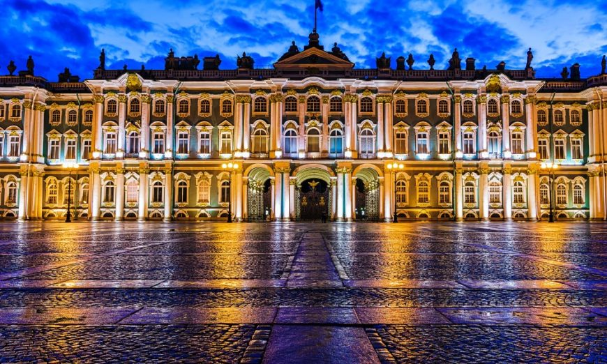

RUSSIA
MOUNT ELBRUS
Mount Elbrus (Russian: Эльбрус, tr. Elbrus, IPA: [ɪlʲˈbrus]; Kabardian: Ӏуащхьэмахуэ, romanized: 'uaşhəmaxuə; Karachay-Balkar: Минги тау, romanized: Mingi Taw) is the highest and most prominent peak in Russia and Europe. It is situated in the western part of the Caucasus and is the highest peak of the Caucasus Mountains. The dormant volcano rises 5,642 m (18,510 ft) above sea level; it is the highest stratovolcano in Eurasia, as well as the tenth-most prominent peak in the world.[6] The mountain stands in Southern Russia, in the Russian republic of Kabardino-Balkaria.
Elbrus has two summits, both of which are dormant volcanic domes. The taller, western summit is 5,642 metres (18,510 ft);[2] the eastern summit is 5,621 metres (18,442 ft). The eastern summit was first ascended on 10 July 1829 by Khillar Khachirov, and the western summit in 1874 by a British expedition led by F. Crauford Grove and including Frederick Gardner, Horace Walker and the Swiss guide Peter Knubel.
STATE HERMITAGE
The State Hermitage Museum (Russian: Государственный Эрмитаж, tr. Gosudarstvennyj Ermitaž, IPA: [ɡəsʊˈdarstvʲɪn(ː)ɨj ɪrmʲɪˈtaʂ]) is a museum of art and culture in Saint Petersburg, Russia. It is the largest art museum in the world by gallery space.[4] It was founded in 1764 when Empress Catherine the Great acquired an impressive collection of paintings from the Berlin merchant Johann Ernst Gotzkowsky. The museum celebrates the anniversary of its founding each year on 7 December, Saint Catherine's Day.[5] It has been open to the public since 1852. The Art Newspaper ranked the museum 6th in their list of the most visited art museums, with 1,649,443 visitors in 2021.[3]
Its collections, of which only a small part is on permanent display, comprise over three million items (the numismatic collection accounts for about one-third of them).

WINTER PALACE
The Winter Palace (Russian: Зимний дворец, tr. Zimnij dvorets, IPA: [ˈzʲimnʲɪj dvɐˈrʲɛts]) is a palace in Saint Petersburg that served as the official residence of the Russian Emperor from 1732 to 1917. The palace and its precincts now house the Hermitage Museum. Situated between Palace Embankment and Palace Square, adjacent to the site of Peter the Great's original Winter Palace, the present and fourth Winter Palace was built and altered almost continuously between the late 1730s and 1837, when it was severely damaged by fire and immediately rebuilt.[1] The storming of the palace in 1917, as depicted in Soviet art and in Sergei Eisenstein's 1928 film October, became an iconic symbol of the Russian Revolution.

CATHERINE PALACE
Following the Great Northern War, Russia recovered the farm called Saari Mojs (a high place) or Sarskaya Myza, which resided on a hill 65 m in elevation. In 1710, Peter the Great gave the estate to his wife Catherine I, the village of which was initially called Sarskoye Selo, and then finally Tsarskoye Selo (Tsar's Village). In 1723, Catherine I's Stone Palace, designed by Johann Friedrich Braunstein and built by Johann Ferster, replaced the original wooden house. This was a two-storey sixteen-room building, with state chambers finished in polished alabaster, while the upper one included Gobelin tapestry. The southeast portion of the estate included a garden designed by Jan Roosen, with terraces, stone staircases, parterres, trellised arbours, and ponds, while a menagerie was located on the opposite of the estate
CURONIAN SPIL
The Curonian Spit stretches from the Sambia Peninsula on the south to its northern tip next to a narrow strait, across which is the port city of Klaipėda on the mainland of Lithuania. The northern 52 km (32 mi) long stretch of the Curonian Spit peninsula belongs to Klaipėda County, Lithuania, while the rest is part of the Kaliningrad Oblast, Russia. The width of the spit varies from a minimum of 400 m (1,300 ft) in Russia (near the village of Lesnoy) to a maximum of 3,800 m (12,500 ft; 2.4 mi) in Lithuania (just north of Nida).